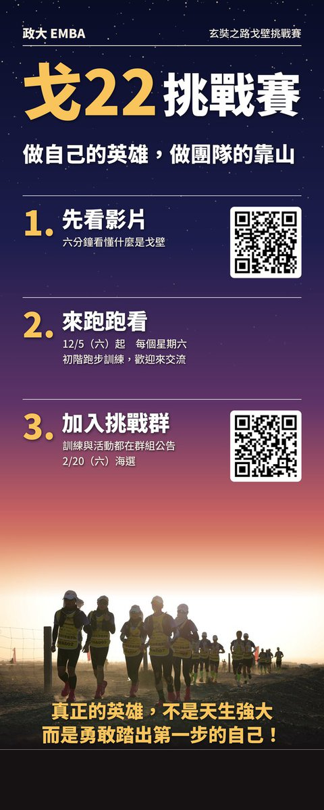

政大 EMBA 戈壁挑戰隊・戈22
戈22 行事曆與團隊目標：做自己的英雄，做團隊的靠山
訓練時間、每一堂團練的日期、海選與移地、團隊的四個目標和組織，都在這一份。日期如有調整，以這一頁與隊上通知為準。
征途時程
戈22 宣傳影片：121 公里太遠了嗎？六分鐘看懂玄奘之路戈壁挑戰賽
影片打不開的話，直接到 YouTube 看：youtube.com/watch?v=yf2nSocU-zw
教練團
總教練 Head Coach張嘉哲
1屆奧運2屆亞運3屆世錦賽14次國手
- 2012 年平壤馬拉松 2:16:06，達標倫敦奧運
- 2019 年廣州馬拉松個人最佳 2:15:02
- 50 公里全國紀錄保持人
跑者肌地 助理教練群運動科學 × 肌力體能
團隊目標：四大獎再抱回
四個獎要全隊一起拿。看完整的團隊目標 →
加入我們
行事曆大項
行事曆：12/5 開練、2/20 海選（暫定）、9/27 出征
| 月份 | 日期 | 大項 | 待辦事項（這天之前完成） | 參與人員 |
|---|
| 2026 年 11 月 | 11/29（日） | 新生始業式：戈22 到各班宣傳 | 招生手牌（Sisy）
易立牌（Sisy）
戈壁 LOGO（David）
介紹文件及影片（David） 已完成
裝備搬到政大樂活營（會長）
與班聯會 Eric 合作，到班上推銷（David）
只能由學生會代表推銷，或用立牌 | |
| 12 月 | 12/5（六） | 週六團練開始，之後每週六 06:00 | | |
| 12/15（二） | | 拍照用的立牌，要重新設計（Sisy） | |
| 2027 年 2 月 | 2/20（六） | 海選暫定：12 公里，另有 5 公里體驗組 | 賽道 T 服（Vinka）
手提背包（Amy） | |
| 2/21（日） | 社團博覽會：戈22 攤位 | | |
| 3 月 | 3/2 到 3/19 | 旅行社報名 | | |
| 3/3（三） | 固定團練開始：週三、週六、每月一次週日 | | |
| 5 月 | 5/30（日） | 移地訓練：東眼山 | | |
| 7 月 | 7/25（日） | 移地訓練：太平山 | | |
| 8 月 | 8/28 到 8/29 | 移地訓練：觀霧，兩天一夜 | | |
| 9 月 | 9/27 | 出征 | | |
| 10 月 | 依主辦單位公告 | 戈壁挑戰賽 | | |
海選日期是暫定；移地訓練的日期與地點確認後會更新。每一堂團練的日期在「每週訓練時間」。
全隊每週訓練時間 1／6
每週訓練時間：12 月起每週六，3 月起週三、週六、每月一次週日
2026 年 12 月到 2027 年 2 月
每週六06:00–08:00
12 月：5、12、19、26 ｜ 1 月：2、9、16、23、30 ｜ 2 月：13、20、27（2/6 春節停課）
2027 年 3 月到 9 月
每週三19:30–21:30
每週六06:00–08:00
每月一次週日06:00–08:00移地訓練算這一次
集合地點由教練團事先通知；遇天候、連假或場地因素調整時，會另行公告。沒跑過也歡迎，到場後依組別分開練。
每週訓練時間2／6 前期
每一堂的日期：12 到 1 月，每週六 06:00
每一堂團練一列，最左邊是第幾週（W1 是 12/5 那一週）。「內容」那一欄在練完之後補上。
2026 年 12 月
| 週 | 日期 | 時間 | 內容 |
|---|
| W1 | 12/5（六） | 週六 06:00–08:00 | |
| W2 | 12/12（六） | 週六 06:00–08:00 | |
| W3 | 12/19（六） | 週六 06:00–08:00 | |
| W4 | 12/26（六） | 週六 06:00–08:00 | |
2027 年 1 月
| 週 | 日期 | 時間 | 內容 |
|---|
| W5 | 1/2（六） | 週六 06:00–08:00 | |
| W6 | 1/9（六） | 週六 06:00–08:00 | |
| W7 | 1/16（六） | 週六 06:00–08:00 | |
| W8 | 1/23（六） | 週六 06:00–08:00 | |
| W9 | 1/30（六） | 週六 06:00–08:00 | |
每週訓練時間3／6 開訓
2 到 3 月：3/3 起週三 19:30、週六 06:00
2027 年 2 月
| 週 | 日期 | 時間 | 內容 |
|---|
| W10 | 2/6（六） | 停課 | 春節停課 |
| W11 | 2/13（六） | 週六 06:00–08:00 | |
| W12 | 2/20（六） | 海選 | 海選日（暫定）：12 公里，另有 5 公里體驗組 |
| W13 | 2/27（六） | 週六 06:00–08:00 | |
3 月
| 週 | 日期 | 時間 | 內容 |
|---|
| W14 | 3/3（三） | 週三 19:30–21:30 | |
| W14 | 3/6（六） | 週六 06:00–08:00 | |
| W15 | 3/10（三） | 週三 19:30–21:30 | |
| W15 | 3/13（六） | 週六 06:00–08:00 | |
| W16 | 3/17（三） | 週三 19:30–21:30 | |
| W16 | 3/20（六） | 週六 06:00–08:00 | |
| W17 | 3/24（三） | 週三 19:30–21:30 | |
| W17 | 3/27（六） | 週六 06:00–08:00 | |
| W18 | 3/31（三） | 週三 19:30–21:30 | |
| 週日 | 週日 06:00–08:00 | 每月一次，日期另行通知 |
每週訓練時間4／6 基礎與初選
4 到 5 月：5/30 東眼山移地
4 月
| 週 | 日期 | 時間 | 內容 |
|---|
| W18 | 4/3（六） | 週六 06:00–08:00 | |
| W19 | 4/7（三） | 週三 19:30–21:30 | |
| W19 | 4/10（六） | 週六 06:00–08:00 | |
| W20 | 4/14（三） | 週三 19:30–21:30 | |
| W20 | 4/17（六） | 週六 06:00–08:00 | |
| W21 | 4/21（三） | 週三 19:30–21:30 | |
| W21 | 4/24（六） | 週六 06:00–08:00 | |
| W22 | 4/28（三） | 週三 19:30–21:30 | |
| 週日 | 週日 06:00–08:00 | 每月一次，日期另行通知 |
5 月
| 週 | 日期 | 時間 | 內容 |
|---|
| W22 | 5/1（六） | 週六 06:00–08:00 | |
| W23 | 5/5（三） | 週三 19:30–21:30 | |
| W23 | 5/8（六） | 週六 06:00–08:00 | |
| W24 | 5/12（三） | 週三 19:30–21:30 | |
| W24 | 5/15（六） | 週六 06:00–08:00 | |
| W25 | 5/19（三） | 週三 19:30–21:30 | |
| W25 | 5/22（六） | 週六 06:00–08:00 | |
| W26 | 5/26（三） | 週三 19:30–21:30 | |
| W26 | 5/29（六） | 週六 06:00–08:00 | |
| W26 | 5/30（日） | 移地 | 東眼山移地訓練 |
每週訓練時間5／6 移地整合
6 到 7 月：7/25 太平山移地
6 月
| 週 | 日期 | 時間 | 內容 |
|---|
| W27 | 6/2（三） | 週三 19:30–21:30 | |
| W27 | 6/5（六） | 週六 06:00–08:00 | |
| W28 | 6/9（三） | 週三 19:30–21:30 | |
| W28 | 6/12（六） | 週六 06:00–08:00 | |
| W29 | 6/16（三） | 週三 19:30–21:30 | |
| W29 | 6/19（六） | 週六 06:00–08:00 | |
| W30 | 6/23（三） | 週三 19:30–21:30 | |
| W30 | 6/26（六） | 週六 06:00–08:00 | |
| W31 | 6/30（三） | 週三 19:30–21:30 | |
| 週日 | 週日 06:00–08:00 | 每月一次，日期另行通知 |
7 月
| 週 | 日期 | 時間 | 內容 |
|---|
| W31 | 7/3（六） | 週六 06:00–08:00 | |
| W32 | 7/7（三） | 週三 19:30–21:30 | |
| W32 | 7/10（六） | 週六 06:00–08:00 | |
| W33 | 7/14（三） | 週三 19:30–21:30 | |
| W33 | 7/17（六） | 週六 06:00–08:00 | |
| W34 | 7/21（三） | 週三 19:30–21:30 | |
| W34 | 7/24（六） | 週六 06:00–08:00 | |
| W34 | 7/25（日） | 移地 | 太平山移地訓練 |
| W35 | 7/28（三） | 週三 19:30–21:30 | |
| W35 | 7/31（六） | 週六 06:00–08:00 | |
每週訓練時間6／6 多日訓練與賽前調整
8 到 9 月：觀霧兩天一夜，團練到 9/25
8 月
| 週 | 日期 | 時間 | 內容 |
|---|
| W36 | 8/4（三） | 週三 19:30–21:30 | |
| W36 | 8/7（六） | 週六 06:00–08:00 | |
| W37 | 8/11（三） | 週三 19:30–21:30 | |
| W37 | 8/14（六） | 週六 06:00–08:00 | |
| W38 | 8/18（三） | 週三 19:30–21:30 | |
| W38 | 8/21（六） | 週六 06:00–08:00 | |
| W39 | 8/25（三） | 週三 19:30–21:30 | |
| W39 | 8/28（六） | 移地 | 觀霧移地訓練，兩天一夜（到 8/29） |
9 月
| 週 | 日期 | 時間 | 內容 |
|---|
| W40 | 9/1（三） | 週三 19:30–21:30 | |
| W40 | 9/4（六） | 週六 06:00–08:00 | |
| W41 | 9/8（三） | 週三 19:30–21:30 | |
| W41 | 9/11（六） | 週六 06:00–08:00 | |
| W42 | 9/15（三） | 週三 19:30–21:30 | |
| W42 | 9/18（六） | 週六 06:00–08:00 | |
| W43 | 9/22（三） | 週三 19:30–21:30 | |
| W43 | 9/25（六） | 週六 06:00–08:00 | |
| 週日 | 週日 06:00–08:00 | 每月一次，日期另行通知 |
藍色是週六、橘色是週三、綠色是移地與每月一次的週日。海選日期是暫定；遇連假、天候調整時由教練團通知。
訓練流程教練、恢復師、營養師、隊醫
訓練流程：教練帶練，恢復師連結，隊醫把關
圖可以左右滑動。
訓練長定方向，張嘉哲總教練與教練團帶練；恢復師和營養師支援訓練，並把狀況交給隊醫；能不能上賽道、賽中要不要退，由隊醫決定。
團隊目標一個目標、四個獎
戈22 目標：四大獎再抱回
一個目標、四個獎；每個獎一個指標、一個負責的組、三件要做的事。四個獎要全隊一起拿，不是只靠競賽組。
手機上可以左右滑動看整張圖。
團隊目標組織
組織圖：會長、祕書長，底下五組；每個獎都對得到負責的組
手機上可以左右滑動看整張圖。
每個獎都對得到負責的組：卓越獎是訓練組，沙克爾頓獎是醫療組與訓練組，文化風範獎是領隊與全員，傳承超越獎是公關組的招生。有事找哪一組，看這張圖。
三個組別找到適合你的一組
三個組別：競賽組 A、挑戰組 B、體驗組 C
競賽組 A
做自己的英雄，做團隊的靠山
責任與突破：為學校爭名次的一組。
- 走多少
- 四天約 120 公里，計名次
- 誰能報
- 正式註冊學員，沒跑過 A 隊；當年新生不能報
- 年齡
- 18 到 65 歲
- 人數目標
- 10 人
任務
- 拿卓越獎：團隊成績進前 20 名，保底奮進獎
- 每天取隊上第六人的成績，目標每公里 5 分 45 秒，連續三天
- 做全隊的靠山：帶著其他組一起練
要求（3 到 9 月）
- 團練出席：70% 以上，約 47 堂
- 移地訓練：三次全到
- 月跑量：200 公里以上連續六個月，逐月增加
- 週跑量：約 50 公里（團練兩堂加自主兩次）
- 能力測驗：5 月初選 4 小時 40 公里；7 月決選移地第二天每公里 6 分
- 健康與證書：體檢與平板測試報告；全員急救員證
- 賽道關門：四天各 9、8、8.5、6 小時
挑戰組 B
一起出發、一起到達
團隊與完成：最完整的戈壁體驗，也是自我挑戰。
- 走多少
- 四天約 120 公里，不計名次；每天有金、銀、銅標
- 誰能報
- 正式註冊學員、教職人員
- 年齡
- 18 到 65 歲
- 人數目標
- 50 人
任務
- 拿沙克爾頓獎：關門時間內全員完賽，不丟下任何一個人
- 每 10 到 15 人一組，隊長在前、壓隊在後，一起出發、一起到達
- 每天爭取金、銀、銅標
要求（3 到 9 月）
- 團練出席：50% 以上，約 34 堂
- 移地訓練：三次至少到兩次
- 月跑量：100 公里
- 週跑量：25 公里（團練兩堂加自主一次）
- 能力測驗：關門演練，10 小時內走完 30 公里
- 健康與證書：體檢與平板測試報告；一半隊員有急救員證
- 賽道關門：四天各 10、10.5、11、8 小時
體驗組 C
走過茫茫戈壁，都是姐妹兄弟
參與與歸屬：沒跑過也能來，可以帶家人。
- 走多少
- 只走體驗日一天，約 27 公里，10 小時內走完
- 誰能報
- 隊員的親友也可以報
- 年齡
- 11 到 65 歲，孩子可以來
- 人數目標
- 40 人
任務
- 一起拿傳承超越獎：人數超過上一屆，朝 100 人努力
- 走完體驗日一天約 27 公里
- 在終點迎接 A、B 隊衝線
要求（3 到 9 月）
- 團練出席：不設門檻，鼓勵參加；每月一次體驗組日
- 移地訓練：一次（體驗日模擬）
- 月跑量：60 公里，走路也算
- 週跑量：15 公里，一週兩次
- 能力測驗：體驗日模擬，走完 12 公里
- 健康與證書：體檢與平板測試報告；不要求急救員證
- 賽道關門：10 小時，快走就走得完
三組都要交體檢與平板測試報告、健康問卷與切結書；不合格可以轉後援或體驗組。團練堂數以 3 到 9 月 67 堂計。報名資格依大會當屆章程；各組的訓練要求是目前的規劃，教練團定案後會更新。海選後公布分組。
競賽組 A責任與突破
競賽組 A：為學校爭光的人，做自己的英雄，做團隊的靠山
十個人代表政大 EMBA 和四十多所院校比。A 隊的成績，就是政大在榜上的名次。
| 吸引你的地方 | 內容 |
|---|
| 為學校爭光 | 這一組不是為自己跑，是為學校跑。政大戈13、戈14 曾進前 20 名拿卓越獎 |
| 目標清楚 | 前 20 名拿卓越獎：第六人每公里 5 分 45 秒，連續三天；保底奮進獎每公里 6 分 30 秒 |
| 一人一次 | 依大會章程，A 隊身分一生只能一次。跑過的人就是學長姊，回來帶下一屆 |
| 英雄的位置 | 授旗典禮上台接隊旗、點將臺進場，是出征與慶功宴的主角 |
| 全隊是靠山 | 教練團與課表、三次移地訓練、隊醫、裝備與補給由隊上支援；挑戰組與體驗組在終點迎接 |
| 沒選上也有位子 | 預 A 梯隊與 A 隊同一份課表、同樣參加移地訓練 |
| 新生先進預 A | 當年新生依章程不能進 A 隊，入學先進預 A，第二年再挑戰 A 隊 |
對象：在校有跑步底子的同學、沒跑過 A 隊的歷屆校友。目標 10 人，另有預 A 梯隊；5 月初選、7 月決選，名單由籌備會決定。
政大 A 隊歷屆名次
| 屆 | 名次 | 獎 |
|---|
| 戈13 | 第 14 名 | 卓越獎 |
| 戈14 | 第 15 名 | 卓越獎 |
| 戈17 | 第 31 名 | 奮進獎 |
| 戈19 | 第 40 名 | 奮進獎 |
| 戈20 | 第 35 名 | 奮進獎 |
| 戈21 | 第 34 名 | 奮進獎 |
| 戈22 | 前 20 名 | 卓越獎 |
英雄，是把自己練到每公里 5 分 45 秒連三天的人；靠山，是全隊為這十個人準備的一切，和這十個人回來帶下一屆。
挑戰組 B團隊與完成
挑戰組 B：一起出發、一起到達，最完整的戈壁體驗
四天約 120 公里，一組人一起出發、一起到達，把戈壁從頭到尾看一遍。不趕名次，所以看得到、拍得到、走得完。
| 吸引你的地方 | 內容 |
|---|
| 最完整的體驗 | 點將臺、體驗日、三個競賽日、戈壁露營三晚、終點衝線，四天全部走過 |
| 自我挑戰 | 連續三天每天約 30 公里，是一輩子一次的事；走完就有完賽獎牌。金、銀、銅標是全組一起拿的目標 |
| 跑步也拍照 | 不趕時間，沿途可以停下來拍：黑戈壁、鹽鹼地、雅丹、日出 |
| 一起出發、一起到達 | 每 10 到 15 人一組，有隊長與壓隊；目標不是誰先到，是全組同一個時間衝線 |
| 有教練、有課表 | 教練課表每人都有，從跑步基本原理教起；安全講在前面：體檢、平板測試、隊醫、保險 |
| 學長姊帶路 | 說明會有走過的學長姊分享自己的四天 |
對象：在校各班同學、校友、教職員。目標 50 人，依速度分三組：B1 追金標、B2 追銀標、B3 追銅標；受傷或狀況不好可以往後一組。
每天的目標自己選
| 競賽日 1、2、3 | 配速（每公里） |
|---|
| 金標 | 5、5.5、4.5 小時 | 約 9 分 30 秒到 10 分 |
| 銀標 | 6、7、5.5 小時 | 約 12 分 |
| 銅標 | 8、8、7 小時 | 約 15 分 |
| 走完（關門） | 10.5、11、8 小時 | 約 19 分 40 秒 |
時間依上一屆大會規則，當屆以大會公告為準。
挑戰組 BB 組的規定
B 組的規定：10 到 15 人一組，一起出發、一起到達
依速度分三組：B1 追金標、B2 追銀標、B3 追銅標。
| 原則 | 內容 |
|---|
| 1 一起出發、一起到達 | 同一個時間出發，同一個時間衝線，一個都不能少。全組同進同出補給站，進站、出站都清點 |
| 2 配速看最慢的人 | 隊長依關門時間控速，不拆組、不丟人。快的人的工作是陪慢的人 |
| 3 隊長在前 | 沒有人超過隊長；看路標、決定休息點、回報人數與狀況 |
| 4 壓隊在後 | 沒有人落在壓隊後面；看每個人的水、腳、臉色 |
| 5 兩人結對 | 互看水、補給、腳；不單獨行動、不離開賽道 |
| 6 只往後不往前 | 賽道上不脫隊超前、不往前換組；狀況不好就往後一組 |
| 7 退賽誰說了算 | 壓隊提出，隊醫判斷，領隊決定。退賽不是丟臉 |
| 8 遵守賽道規則 | 不與 A 隊身體接觸或遞物、不搭車、不抄近路、號碼衣穿好 |
| 9 訓練期就這樣走 | 5 月分組，移地訓練照組走，7、8 月做關門時間演練 |
沙克爾頓獎A、B 組一起守
A、B 隊關門時間內全員完賽：前四道關卡在台灣做完
關門時間與配速（體驗日／競賽日 1、2、3）
| 時間（小時） | 配速（每公里） | 說明 |
|---|
| 全程關門 | 10／10.5／11／8 | 20 分 40 秒／19 分 40 秒／19 分 35 秒／17 分 45 秒 | A、B 隊都適用，超過算退賽 |
| A 隊關門 | 9／8／8.5／6 | 18 分 35 秒／15 分／15 分 10 秒／13 分 20 秒 | 只影響團隊成績 |
| B 隊金標 | 5／5.5／4.5 | 9 分 25 秒／9 分 50 秒／10 分 | 慢跑或快走加跑 |
| B 隊銀標 | 6／7／5.5 | 11 分 15 秒／12 分 30 秒／12 分 15 秒 | 快走 |
| B 隊銅標 | 8／8／7 | 15 分／14 分 15 秒／15 分 30 秒 | 時限內走完有銅標 |
依前兩屆大會資料，當屆以大會公告為準。金、銀、銅標只有競賽日三天；搭班車算退賽。
體驗組 C參與與歸屬
體驗組 C：走過茫茫戈壁，都是姐妹兄弟，全家一起來
只走體驗日一天約 27 公里，11 歲就能報。沒跑過也能來：想讓身體變好、想留下照片、想學怎麼吃怎麼動、想帶家人走一趟絲路的人，來了就是政大戈22 的一份子。
1 身體變好
3 月到 8 月跟著團練走，不用跑；每月 60 公里，用手錶記錄。
報名時做體檢與平板測試，可以自己留下前後的數字對照；個人的健康資料不會公開。
2 照片：留下一輩子的畫面
點將臺、戈壁日出、終點衝線。
訓練期每月一次團練合照，移地訓練拍短片。
3 影片：怎麼吃、怎麼動
基本運動入門：暖身、伸展、核心、走路姿勢。
基本跑步入門：走跑交替、配速、呼吸、鞋襪怎麼選。
每支幾分鐘，放在隊上的 YouTube 頻道，每週一支。
4 全家運動：家人與小孩一起來
配偶同行，11 歲以上的孩子可以報體驗組。
海選有 5 公里體驗組，全家一起走；每月一次體驗組日。
在終點迎接 A、B 隊衝線。
對象：隊員的親友也可以報，11 到 65 歲。目標 40 人。行程與費用以旅行社報名時公布的內容為準。
教學影片YouTube
教學影片：熱身、收操、滾筒放鬆、App 使用
點圖就到 YouTube 播放。頻道「政大EMBA戈壁」：youtube.com/@政大EMBA戈壁
熱身、收操、滾筒放鬆
App 使用：NCCU GobiTrack
宣傳資源照片與 Slogan
照片與 Slogan：30 張照片、10 句 Slogan，拿去就能用
給幫忙宣傳的夥伴用。照片點一下看大圖，按「下載」存到手機或電腦；Slogan 按「複製」就能貼到 LINE、社群或設計稿。
10 句 Slogan
2
真正的英雄，不是天生強大，而是勇敢踏出第一步的自己！
第 1 句是戈22 的隊呼；第 2 到 4 句是隊上已經在用的話；第 5 到 10 句是新寫的，可以挑著用。
照片
第 1 到 15 張是戈21 賽道，第 16 到 18 張是 5/23 團練，第 19 到 30 張是 8/15 移地訓練。照片裡有隊友，轉貼時請留意場合。
宣傳資源LINE
LINE 宣傳文、PDF 介紹與三個 QR Code
LINE 宣傳文按「複製」貼到群組，連結都已經放在文字裡；圖文的 PDF 介紹和三個 QR Code 在下面，可以下載。
LINE 宣傳文
完整版（搭配影片）
【戈22挑戰賽】
「121 公里？太遠了吧。」
「我連五公里都沒跑過。」
這些話，很多後來走完戈壁的學長姐，當初都說過。
政大 EMBA 戈22 開始招募了！
我們做了一支六分多鐘的影片，把「什麼是戈壁」一次講清楚：
🎬 影片：https://youtu.be/yf2nSocU-zw
▪ 四天三夜 121 公里，是分四天走，每天大約 27 到 34 公里
▪ B 組挑戰組可以全程用走的，守住每天的關門時間就好
▪ A 組競賽組、B 組挑戰組、C 組體驗組，選一個適合你的
▪ 你不是明天就出發，十月才站上起跑線
👉 加入戈22 挑戰群：https://line.me/ti/g/_D2jxDgUFq
📱 政大專屬程式「NCCU GobiTrack」
iPhone：https://apps.apple.com/tw/app/nccu-gobitrack/id6828919860
▶️ 訂閱 YouTube 頻道「政大EMBA戈壁」：https://www.youtube.com/@政大EMBA戈壁
🏃 先來跑跑看
12/5（六）起到 2 月，每個星期六都有初階的跑步訓練。
不用報名戈壁，也不用會跑，歡迎先來交流、認識大家。
📅 2/20（六）海選
訓練時間地點和後續活動，都會在挑戰群公告。
你不需要先成為跑者，你需要的，是願意跨出第一步。
政大戈22，做自己的英雄，做團隊的靠山！
短版（轉貼到各班群組）
政大 EMBA 戈22 開始招募了！
四天三夜 121 公里聽起來很遠？其實可以用走的，而且有一整年的時間慢慢練。
六分鐘影片帶你看懂什麼是戈壁：https://youtu.be/yf2nSocU-zw
👉 加入戈22 挑戰群：https://line.me/ti/g/_D2jxDgUFq
📱 政大專屬程式「NCCU GobiTrack」
iPhone：https://apps.apple.com/tw/app/nccu-gobitrack/id6828919860
▶️ 訂閱 YouTube 頻道「政大EMBA戈壁」：https://www.youtube.com/@政大EMBA戈壁
🏃 12/5（六）起，每個星期六初階跑步訓練，歡迎來交流
📅 2/20（六）海選
政大戈22，做自己的英雄，做團隊的靠山！
PDF 介紹「什麼是戈壁」（圖文，10 頁）
下載 PDF（6.6 MB）在瀏覽器打開
有照片有文字的介紹，可以直接傳到 LINE 群組或印出來：賽事是什麼、四天路線圖、三個組別、訓練時程、三堂領導課。下面是十頁的預覽，點任何一頁會打開 PDF。
三個 QR Code（圖檔）
要放進簡報、海報或直接傳圖的時候用。點圖看大圖，按「下載圖檔」存下來。
![LINE 戈22 挑戰群 的 QR Code]()
![App NCCU GobiTrack 的 QR Code]()
![YouTube 政大EMBA戈壁 的 QR Code]()